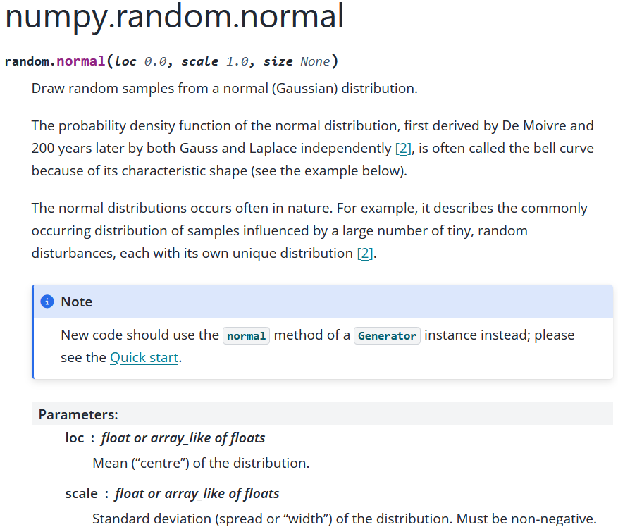
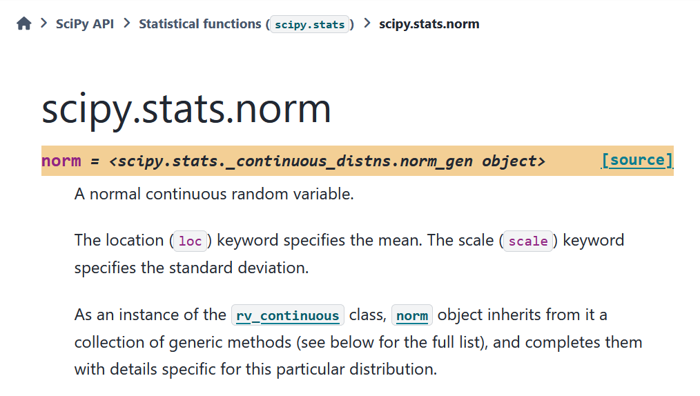
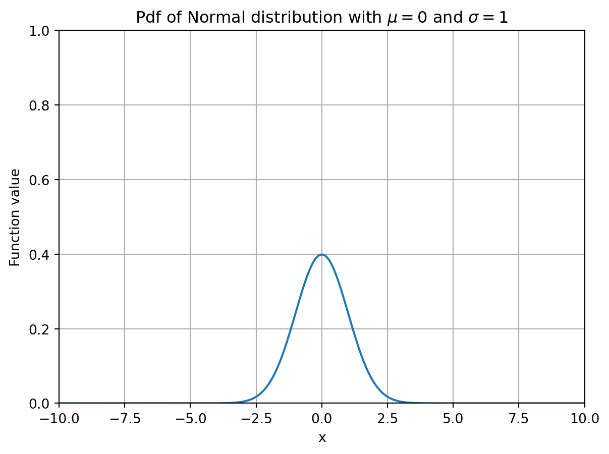
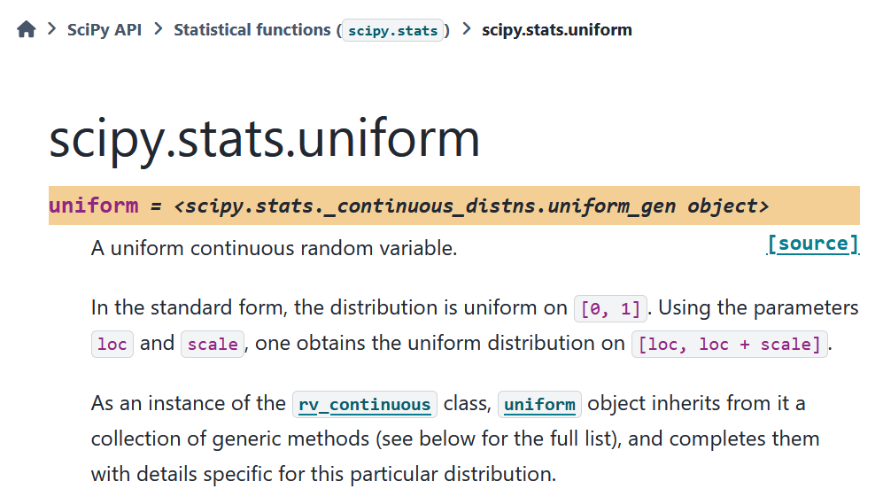

import numpy as np8 Probability theory
8.1 Randomness
There are various ways to generate random variables and sets in Python. Throughout this chapter we will rely on basic concepts from probability theory such as probability density function (pdf) and cumulative density function (cdf).
Furthermore, we will be working with the normal, uniform and other distributions. Familiarity with those is assumed. Whenever you run into a mathematical or probabilistic aspect you do not understand, please look it up and otherwise ask the teacher about it.
We will use functionality from the random subpackage of NumPy. This subpackage is not to be confused with the random package of Python, which has a lot of similar functionality.
8.1.1 Samples
The random subpackage has functions that can generate so-called pseudo-random numbers. Informally speaking, these numbers “behave” as random numbers when performing numerical experiments with them, but they are not truly random (which can be an issue, e.g., if you would use such numbers of cryptographic purposes).
We next discuss some functions to generate random numbers from well-known distributions.
np.random.rand(m,n): Generate an m \times n two-dimensional array with numbers uniformly drawn form the interval [0,1] (i.e., every number is equally likely).
m,n = 2, 4
M = np.random.rand(m,n)
print(M)[[0.56316598 0.99526568 0.85911226 0.61393409]
[0.81813879 0.86440648 0.64375835 0.13505428]]When m and n are not inputted, a single random number is returned.
x = np.random.rand()
print(x)0.7460105703595791np.random.randn(m,n): Generates an m \times n two-dimensional array with numbers drawn from the normal distribution with mean \mu = 0 and standard deviation \sigma = 1.
m,n = 3, 5
M = np.random.randn(m,n)
print(M)[[ 1.20887343 -1.25306619 -0.35518437 -0.5004367 -0.10132312]
[ 0.30685124 -0.54057472 0.84437294 0.72706402 -0.98896099]
[-0.81447039 -0.85921817 0.44201048 0.46820429 0.15868678]]We conclude with sampling numbers from the discrete uniform distribution over a set \{a,a+1,\dots,b-1\}. Here every number i in this discrete interval is generated with equal probability 1/(b - a).
np.random.randint(a,b,(m,n)): Generates an m \times n two-dimensional array with numbers drawn from the discrete uniform distribution on \{a,a+1,\dots,b-1\}.
a, b = 4, 10
m,n = 3, 15
M = np.random.randint(a,b,(m,n))
print(M)[[4 4 6 5 6 6 8 8 9 6 5 8 9 5 7]
[5 6 6 5 5 6 7 8 8 6 6 6 5 8 9]
[8 8 7 5 8 4 4 6 5 4 9 5 7 5 8]]For almost every well-known probability distribution we can get samples from its distribution. See the documentation for a list of all the distributions.
Finally, we remark that it is also possible to generate samples from different distributions from the same family. As an example, consider a normal distribution with mean \mu and standard deviations \sigma. We can generate samples from this distribution with np.random.normal().
As input it takes two keyword arguments: loc for the mean \mu and scale for the standard deviation \sigma. You can figure this out by inspecting the documentation.
Most distributions have a loc and or scale keyword input argument, that takes a default value if none is inputted; loc=0 and scale=1 are the defaults for np.random.normal.

mu = 1
sigma = 2
samples = np.random.normal(loc=mu, scale=sigma)
print(samples)1.1975294972971522This function also allows vectorized inputs: If we input an array of means and standard deviations, then a sample for every combination is generated.
mu = np.array([0,1,2,2])
sigma = np.array([1,2,4,2])
samples = np.random.normal(loc=mu, scale=sigma)
print(samples)[ 1.14764844 0.51373499 -1.36950708 0.01866475]Finally, if you want to have m samples from all combinations of location and scale parameters, you can specify this in the size keyword argument by setting it to (m,n) where n is the common length of the location and scale array. For every scale-location combination, the m samples of this combination can be found in a column of the output.
mu = np.array([0,1,2,2])
sigma = np.array([1,2,4,2])
m = 3
n = np.size(mu)
samples = np.random.normal(loc=mu, scale=sigma, size=(m,n))
print(samples)[[-2.23729871 0.55452864 12.24213026 4.00131345]
[ 1.23168213 2.69135115 4.80683004 3.73062022]
[-0.92774262 -0.55497478 -0.71635049 4.15376854]]8.1.2 Subsets
Next to the generation of random numbers, it is also possible to generate random subsets of elements of a given array using the choice() function. It takes as input an array from which we want to obtain a subset and we an set the size of the subset that we want to have using the size keyword argument.
k = 15
x = np.arange(0,11,1)
subset = np.random.choice(x,size=k)
print(subset)[8 7 6 2 0 0 9 5 3 5 6 7 9 0 8]As can be seen from the output above, some numbers appear twice in the subset, meaning that choice() samples a subset with replacement. If you want to sample without replacement, you can set the keyword replace to False.
k = 8
x = np.arange(0,11,1)
subset = np.random.choice(x,size=k,replace=False)
print(subset)[5 0 2 9 4 6 1 3]Finally, you can also specify the probability with which every element should be samples using the keyword argument p.
k = 8
# Set {0,1,2,...,9}
x = np.arange(0,10,1)
# Probabilities for elements in set
prob = np.array([1/3,1/3,0,0,0,0,0,0,0,1/3])
# Generating random subset
subset = np.random.choice(x,size=k,p=prob)
# Only 0, 1, 9 have positive probabilities
print(subset)[0 1 0 9 1 0 0 1]There is also the permutation() function that returns the elements in an array in a random order. That is, it creates a so-called random permutation of the elements in the array.
x_perm = np.random.permutation(x)
print(x_perm)[6 2 9 0 8 5 1 3 7 4]If you would apply this function on a two-dimensional array, it returns the same array in which the rows are randomly permuted (i.e., the inner lists are randomly permuted).
X = np.arange(0,18,1).reshape(3,6)
x_perm = np.random.permutation(X)
print(x_perm)[[ 0 1 2 3 4 5]
[ 6 7 8 9 10 11]
[12 13 14 15 16 17]]8.1.3 Seed
When writing code that involves random numbers of objects, it can sometimes be useful to “fix” the randomness in the script, e.g., when debugging. This can be done by setting a so-called random seed using the seed() function.
For sake of comparison, let us first generate two random numbers from [0,1].
a = np.random.rand()
b = np.random.rand()
print(a,b)0.04569414078779832 0.2398519171191409If you rerun the code above it will give different outputs every time. Try this yourself by copying the code into Spyder.
We next do the same, but with a fixed seed s using seed(s). Different choices of s fix the randomness in a different way. If you copy the code below into Spyder and rerun it a couple of times, the output will always be the same.
#Set seed to be s = 3
np.random.seed(3)
a = np.random.rand()
b = np.random.rand()
print(a,b)0.5507979025745755 0.70814782261810488.2 Probability distributions
The stats module of SciPy has many built-in probability distributions. Each distribution can be seen as an object on which various methods can be performed (such accessing its probability density function or summary statistics like the mean and median). You should think of an ‘object’ in the context of object oriented programming, see, e.g., here to recall the basics of this paradigm.
import scipyIn this section we will focus on continuous probability distributions. SciPy also has many built-in discete probability distributions.
A list of all continuous distributions that are present in the stats module can be found here; they are so-called stats.rv_continuous objects. We can instantiate a distributional object by using scipy.stats.dist_name where dist_name is the name of a built-in (continuous) probability distribution in the mentioned list.
Many distributions have input parameters scale and loc that model the scale and location of the distribution, respectively. Depending on the distribution that is considered, these parameters have different meanings.
As an example, the normal distribution has probability density function f(x) = \frac{1}{\sqrt{2\pi\sigma^2} } e^{-\frac{(x-\mu)^2}{2\sigma^2}} which is parameterized by \mu and \sigma.
In Python \mu is the loc parameter, and \sigma the scale parameter. To figure out the function of the scale and loc parameter, you can check the documentation (which can be found here for the Normal distribution).

All distributions have default values for these parameters, which are typically loc=0 and scale = 1.
# Create normal distribution object with mu=0, sigma=1
dist_norm = scipy.stats.norm(loc=0, scale=1)Once a distribution object has been instantiated, we can use methods (i.e., functions) to obtain various properties of the distribution, such as its probability density function (pdf), cumulative density function (cdf) and summary statistics such as the mean, variance and median (or, more general, quantiles).
We give a list of some common methods for a distribution object named dist_name. We start with common functions associated with a probability distribution.
dist_name.pdf(x): Value f(x) where f is the pdf of the distribution.dist_name.cdf(x): Value F(x) where F is the cdf of the distribution.dist_name.sf(x): Value S(x) where S is the survival function (1 - F) of the distribution.dist_name.ppf(alpha): Returns x so that F^{-1}(x) = \alpha where \alpha \in (0,1).
x = 1
print(dist_norm.pdf(x))0.24197072451914337alpha = 1/2
print(dist_norm.ppf(alpha))0.0All the above functions are vectorized, in the sense that they can also handle higher-dimensional arrays as input. This is convenient, e.g., for visualizing these functions as the example below illustrates.
Show code generating the plot below
import matplotlib.pyplot as plt
# Define the x range of x-values
x = np.linspace(-10,10,600)
# Function values of pdf
y = dist_norm.pdf(x) # Computes pdf values of all elements in x
#Create the figure
plt.figure()
# Create the plot
plt.plot(x, y)
# Create labels for axes
plt.xlabel('x')
plt.ylabel('Function value')
# Fix the range of the axes
plt.xlim(-10,10)
plt.ylim(0,1)
# Add title to the plot
plt.title('Pdf of Normal distribution with $\mu=0$ and $\sigma=1$')
# Add grid to the background
plt.grid()
# Show the plot
plt.show()
We can also access various summary statistics:
dist_name.mean(): Returns mean of the distributiondist_name.var(): Returns variance of the distributiondist_name.median():Returns median of the distribution
dist_norm = scipy.stats.norm(loc=0,scale=2)
mean = dist_norm.mean()
variance = dist_norm.var()
median = dist_norm.median()
print("Mean of the distribution is", mean)
print("Variance of the distribution is", variance)
print("Median of the distribution is", median)Mean of the distribution is 0.0
Variance of the distribution is 4.0
Median of the distribution is 0.0Note that in the example above the standard deviation equals \sigma = 2; the variance is then \sigma^2 = 4.
Finally it is also possible to to access the support upper and lower bound of a distribution.
dist_name.support(): Returns values a,b of (smallest) interval [a,b] for which all probability mass is contained in it.
Let us first consider the uniform distribution.

Here the scale and loc parameters result in a uniform distribution on the interval [loc, loc + scale].
#Uniform distribution on [3,3+4] = [3,7]
dist_unif = scipy.stats.uniform(3,4)
a,b = dist_unif.support()
print(f"The distribution is supported on the interval [{a},{b}]")The distribution is supported on the interval [3.0,7.0]Some distributions have an unbounded support. In the case of the Normal distribution, we have a = -\infty and b = \infty. For the Exponential Distribution, we have a = 0 and b = \infty.
dist_norm = scipy.stats.norm(loc=0, scale=1)
a,b = dist_norm.support()
print(f"The Normal distribution is \
supported on the interval [{a},{b}]")The Normal distribution is supported on the interval [-inf,inf]dist_exp = scipy.stats.expon(loc=0,scale=1)
a,b = dist_exp.support()
print(f"The Exponential distribution is \
supported on the interval [{a},{b}]")The Exponential distribution is supported on the interval [0.0,inf]The value inf that b has in the example above is in fact a number within NumPy, namely np.inf. Let us check that the upper bound of the exponential distribution is indeed np.inf.
statement = (b == np.inf)
print(statement)True8.2.1 Distributions as input arguments
Distributional objects can also serve as input arguments of a function. In that case, you can access the methods of the object inside the function.
Suppose we want to write a function that outputs a message saying whether or not the mean or the median of a distribution is larger. We can do this as follows for an arbitrary distribution.
def mean_median(dist):
if dist.mean() < dist.median():
return "The mean is smaller than the median"
elif dist.mean() == dist.median():
return "The mean and median are equal."
elif dist.mean() > dist.median():
return "The mean is larger than the median."In the function above, the input argument dist is a distribution object whose methods mean() and median() we access within the function.
dist_norm = scipy.stats.norm(loc=1,scale=2)
comparison = mean_median(dist_norm)
print(comparison)The mean and median are equal.